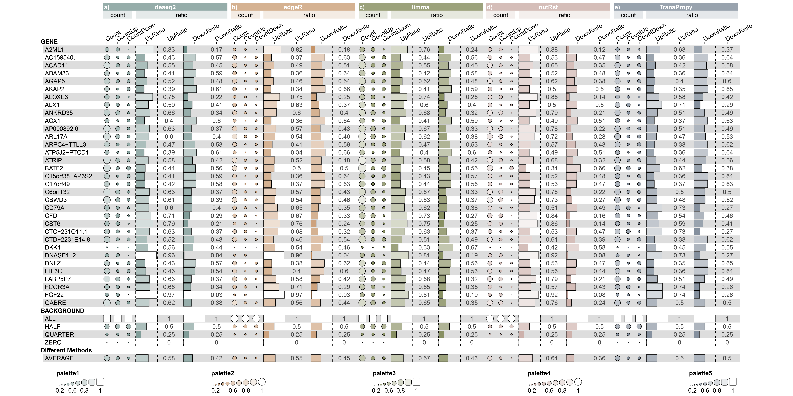

9 Comparison of TransPropy with Other Tool Packages Using Funkyheatmap
9.1 library
library(readr)
library(TransProR)
library(dplyr)
library(rlang)
library(linkET)
library(funkyheatmap)
library(tidyverse)
library(RColorBrewer)9.2 load data
# Load CSV files
four_methods_degs_union_combined_features <- read_csv("../test_TransProR/four_methods_degs_union_combined_features.csv")
all_degs_count_exp_gene_feature_auc_mapping_0_5_0_9 <- read_csv("../test_TransProR/all_degs_count_exp_gene_feature_auc_mapping_0.5_0.9.csv")
all_degs_count_exp_gene_feature_auc_mapping_0_9 <- read_csv("../test_TransProR/all_degs_count_exp_gene_feature_auc_mapping_0.9.csv")
# Extract features and genes
AutoFeatureSelection <- four_methods_degs_union_combined_features$Feature
NewMACFCmain_0_5_0_9 <- all_degs_count_exp_gene_feature_auc_mapping_0_5_0_9$Gene
NewMACFCmain_0_9 <- all_degs_count_exp_gene_feature_auc_mapping_0_9$Gene
# Combine gene lists
NewMACFCmain <- c(NewMACFCmain_0_5_0_9, NewMACFCmain_0_9)
# Load RDS files
DEG_deseq2 <- readRDS("../test_TransProR/Select DEGs/DEG_deseq2.Rdata")
DEG_edgeR <- readRDS("../test_TransProR/Select DEGs/DEG_edgeR.Rdata")
DEG_limma_voom <- readRDS("../test_TransProR/Select DEGs/DEG_limma_voom.Rdata")
outRst <- readRDS("../test_TransProR/Select DEGs/Wilcoxon_rank_sum_testoutRst.Rdata")
# Remove duplicates
AutoFeatureSelection <- unique(AutoFeatureSelection)
NewMACFCmain <- unique(NewMACFCmain)
# Intersection
TransPropy_intersection <- intersect(AutoFeatureSelection, NewMACFCmain)
print(TransPropy_intersection)
# Union
TransPropy_union_list <- union(AutoFeatureSelection, NewMACFCmain)9.3 To ensure a relatively fair comparison, the number of features extracted by the other four methods is equal to the number of features in the TransPropy_union_list.
9.3.1 Assuming Your Data is Stored in the Data Frame Variable DEG_deseq2
# Set filtering parameters
p_val_col <- "pvalue"
log_fc_col <- "log2FoldChange"
p_val_threshold <- 0.01
N <- 2635 # Top N genes
# Check if the specified columns exist in the data frame
if (!(p_val_col %in% names(DEG_deseq2))) {
stop(paste("Column", p_val_col, "not found in the data frame."))
}
if (!(log_fc_col %in% names(DEG_deseq2))) {
stop(paste("Column", log_fc_col, "not found in the data frame."))
}
# Filter data: first by p-value threshold
filtered_data <- DEG_deseq2 %>%
filter(!!sym(p_val_col) < p_val_threshold)
# Check if the number of filtered genes is greater than N
if (nrow(filtered_data) > N) {
# Sort by the absolute value of log2FoldChange and take the top N genes
deseq2_filtered_data <- filtered_data %>%
arrange(desc(abs(!!sym(log_fc_col)))) %>%
head(N)
# Add row names as a new column "gene"
deseq2_filtered_data <- deseq2_filtered_data %>%
mutate(gene = rownames(deseq2_filtered_data))
# Remove row names
rownames(deseq2_filtered_data) <- NULL
}9.3.2 Assuming Your Data is Stored in the Data Frame Variable DEG_edgeR
# Set filtering parameters
p_val_col <- "PValue"
log_fc_col <- "logFC"
p_val_threshold <- 0.01
N <- 2635 # Top N genes
# Check if the specified columns exist in the data frame
if (!(p_val_col %in% names(DEG_edgeR))) {
stop(paste("Column", p_val_col, "not found in the data frame."))
}
if (!(log_fc_col %in% names(DEG_edgeR))) {
stop(paste("Column", log_fc_col, "not found in the data frame."))
}
# Filter data: first by p-value threshold
filtered_data <- DEG_edgeR %>%
filter(!!sym(p_val_col) < p_val_threshold)
# Check if the number of filtered genes is greater than N
if (nrow(filtered_data) > N) {
# Sort by the absolute value of log2FoldChange and take the top N genes
edgeR_filtered_data <- filtered_data %>%
arrange(desc(abs(!!sym(log_fc_col)))) %>%
head(N)
# Add row names as a new column "gene"
edgeR_filtered_data <- edgeR_filtered_data %>%
mutate(gene = rownames(edgeR_filtered_data))
# Remove row names
rownames(edgeR_filtered_data) <- NULL
}9.3.3 Assuming Your Data is Stored in the Data Frame Variable DEG_limma_voom
# Set filtering parameters
p_val_col <- "P.Value"
log_fc_col <- "logFC"
p_val_threshold <- 0.01
N <- 2635 # Top N genes
# Check if the specified columns exist in the data frame
if (!(p_val_col %in% names(DEG_limma_voom))) {
stop(paste("Column", p_val_col, "not found in the data frame."))
}
if (!(log_fc_col %in% names(DEG_limma_voom))) {
stop(paste("Column", log_fc_col, "not found in the data frame."))
}
# Filter data: first by p-value threshold
filtered_data <- DEG_limma_voom %>%
filter(!!sym(p_val_col) < p_val_threshold)
# Check if the number of filtered genes is greater than N
if (nrow(filtered_data) > N) {
# Sort by the absolute value of log2FoldChange and take the top N genes
limma_filtered_data <- filtered_data %>%
arrange(desc(abs(!!sym(log_fc_col)))) %>%
head(N)
# Add row names as a new column "gene"
limma_filtered_data <- limma_filtered_data %>%
mutate(gene = rownames(limma_filtered_data))
# Remove row names
rownames(limma_filtered_data) <- NULL
}9.3.4 Assuming Your Data is Stored in the Data Frame Variable outRst
# Set filtering parameters
p_val_col <- "pValues"
log_fc_col <- "log2foldChange"
p_val_threshold <- 0.01
N <- 2635 # Top N genes
# Check if the specified columns exist in the data frame
if (!(p_val_col %in% names(outRst))) {
stop(paste("Column", p_val_col, "not found in the data frame."))
}
if (!(log_fc_col %in% names(outRst))) {
stop(paste("Column", log_fc_col, "not found in the data frame."))
}
# Filter data: first by p-value threshold
filtered_data <- outRst %>%
filter(!!sym(p_val_col) < p_val_threshold)
# Check if the number of filtered genes is greater than N
if (nrow(filtered_data) > N) {
# Sort by the absolute value of log2FoldChange and take the top N genes
outRst_filtered_data <- filtered_data %>%
arrange(desc(abs(!!sym(log_fc_col)))) %>%
head(N)
# Add row names as a new column "gene" and remove row names
outRst_filtered_data <- outRst_filtered_data %>%
mutate(gene = rownames(outRst_filtered_data))
# Remove row names
rownames(outRst_filtered_data) <- NULL
}tumor <- readRDS("../test_TransProR/generated_data1/removebatch_SKCM_Skin_TCGA_exp_tumor.rds")
normal <- readRDS('../test_TransProR/generated_data1/removebatch_SKCM_Skin_Normal_TCGA_GTEX_count.rds')
# Merge the datasets, ensuring both have genes as row names
all_count_exp <- merge(tumor, normal, by = "row.names")
all_count_exp <- tibble::column_to_rownames(all_count_exp, var = "Row.names") # Set the row names
# log_transform
all_count_exp <- log_transform(all_count_exp)
# First, obtain a list of gene names from the row names of the first dataset
gene_names <- deseq2_filtered_data$gene
# Find the matching rows in the second dataframe
deseq2 <- all_count_exp[gene_names, ]
deseq2 <- as.data.frame(t(deseq2))
# First, obtain a list of gene names from the row names of the first dataset
gene_names <- edgeR_filtered_data$gene
# Find the matching rows in the second dataframe
edgeR <- all_count_exp[gene_names, ]
edgeR <- as.data.frame(t(edgeR))
# First, obtain a list of gene names from the row names of the first dataset
gene_names <- limma_filtered_data$gene
# Find the matching rows in the second dataframe
limma <- all_count_exp[gene_names, ]
limma <- as.data.frame(t(limma))
# First, obtain a list of gene names from the row names of the first dataset
gene_names <-outRst_filtered_data$gene
# Find the matching rows in the second dataframe
outRst <- all_count_exp[gene_names, ]
outRst <- as.data.frame(t(outRst))
TransPropy <- all_count_exp[TransPropy_union_list, ]
TransPropy <- as.data.frame(t(TransPropy))9.4 prepare data
tumor <- readRDS("../test_TransProR/generated_data1/removebatch_SKCM_Skin_TCGA_exp_tumor.rds")
normal <- readRDS('../test_TransProR/generated_data1/removebatch_SKCM_Skin_Normal_TCGA_GTEX_count.rds')
# Merge the datasets, ensuring both have genes as row names
all_count_exp <- merge(tumor, normal, by = "row.names")
all_count_exp <- tibble::column_to_rownames(all_count_exp, var = "Row.names") # Set the row names
# log_transform
all_count_exp <- log_transform(all_count_exp)
# First, obtain a list of gene names from the row names of the first dataset
gene_names <- deseq2_filtered_data$gene
# Find the matching rows in the second dataframe
deseq2 <- all_count_exp[gene_names, ]
deseq2 <- as.data.frame(t(deseq2))
# First, obtain a list of gene names from the row names of the first dataset
gene_names <- edgeR_filtered_data$gene
# Find the matching rows in the second dataframe
edgeR <- all_count_exp[gene_names, ]
edgeR <- as.data.frame(t(edgeR))
# First, obtain a list of gene names from the row names of the first dataset
gene_names <- limma_filtered_data$gene
# Find the matching rows in the second dataframe
limma <- all_count_exp[gene_names, ]
limma <- as.data.frame(t(limma))
# First, obtain a list of gene names from the row names of the first dataset
gene_names <-outRst_filtered_data$gene
# Find the matching rows in the second dataframe
outRst <- all_count_exp[gene_names, ]
outRst <- as.data.frame(t(outRst))
TransPropy <- all_count_exp[TransPropy_union_list, ]
TransPropy <- as.data.frame(t(TransPropy))9.5 Finding Genes Common to All Methods
deseq2list <- colnames(deseq2)
edgeRlist <- colnames(edgeR)
limmalist <- colnames(limma)
outRstlist <- colnames(outRst)
lists <- list(AutoFeatureSelection, NewMACFCmain, deseq2list, edgeRlist, limmalist, outRstlist)
TransPro_all <- Reduce(intersect, lists)
print(TransPro_all)9.6 Calculating the Positive and Negative Correlation Ratio for Each Gene with All Other Genes
9.6.1 TransPropy
TransPropy_final_result <- data.frame()
# Loop through each gene name
for (gene in TransPro_all) {
# Prepare a temporary data frame for the loop
correlation <- data.frame()
# Get the data for the current gene
genedata <- as.numeric(TransPropy[, gene])
# Get the list of genes
genelist <- colnames(TransPropy)
# For loop to calculate correlation
for (i in 1:length(genelist)) {
# Calculate correlation
dd <- cor.test(genedata, as.numeric(TransPropy[, i]), method = "spearman")
# Fill the temporary data frame
correlation[i, 1] <- gene
correlation[i, 2] <- genelist[i]
correlation[i, 3] <- dd$estimate
correlation[i, 4] <- dd$p.value
}
# Set column names for the temporary data frame
colnames(correlation) <- c("gene1", "gene2", "cor", "p.value")
# Remove NA values
correlation <- na.omit(correlation)
# Write to file (if needed, uncomment)
# write.table(correlation, file = paste0("correlation_", gene, ".csv"), sep = ",", row.names = TRUE)
# Calculate the number of correlations with an absolute value greater than the threshold
N <- 0.5
TransPropycount <- sum(abs(correlation$cor) > N)
TransPropycountup <- sum(correlation$cor > N)
TransPropycountdown <- sum(correlation$cor < -N)
# Print results
print(paste("TransPropyGene:", gene,
"TransPropycount:", TransPropycount,
"TransPropycountup:", TransPropycountup,
"TransPropycountdown:", TransPropycountdown))
# Add results to the final result data frame
TransPropy_final_result <- rbind(TransPropy_final_result, data.frame(
gene = gene,
TransPropycount = TransPropycount,
TransPropycountup = TransPropycountup,
TransPropycountdown = TransPropycountdown))
}
# Set column names for the final result data frame
colnames(TransPropy_final_result) <- c("gene", "TransPropycount", "TransPropycountup", "TransPropycountdown")
# View the final result
print(TransPropy_final_result)
# Write the final result to a file
# write.table(TransPropy_final_result, file = "TransPropy_final_correlation_TransPropy.csv", sep = ",", row.names = FALSE)
# Calculate ratios
TransPropy_final_result$TransPropycountup_ratio <- TransPropy_final_result$TransPropycountup / TransPropy_final_result$TransPropycount
TransPropy_final_result$TransPropycountdown_ratio <- TransPropy_final_result$TransPropycountdown / TransPropy_final_result$TransPropycount9.6.2 deseq2
deseq2_final_result <- data.frame()
# Loop through each gene name
for (gene in TransPro_all) {
# Prepare a temporary data frame for the loop
correlation <- data.frame()
# Get the data for the current gene
genedata <- as.numeric(deseq2[, gene])
# Get the list of genes
genelist <- colnames(deseq2)
# For loop to calculate correlation
for (i in 1:length(genelist)) {
# Calculate correlation
dd <- cor.test(genedata, as.numeric(deseq2[, i]), method = "spearman")
# Fill the temporary data frame
correlation[i, 1] <- gene
correlation[i, 2] <- genelist[i]
correlation[i, 3] <- dd$estimate
correlation[i, 4] <- dd$p.value
}
# Set column names for the temporary data frame
colnames(correlation) <- c("gene1", "gene2", "cor", "p.value")
# Remove NA values
correlation <- na.omit(correlation)
# Write to file (if needed, uncomment)
# write.table(correlation, file = paste0("correlation_", gene, ".csv"), sep = ",", row.names = TRUE)
# Calculate the number of correlations with an absolute value greater than the threshold
N <- 0.5
deseq2count <- sum(abs(correlation$cor) > N)
deseq2countup <- sum(correlation$cor > N)
deseq2countdown <- sum(correlation$cor < -N)
# Print results
print(paste("deseq2Gene:", gene,
"deseq2count:", deseq2count,
"deseq2countup:", deseq2countup,
"deseq2countdown:", deseq2countdown))
# Add results to the final result data frame
deseq2_final_result <- rbind(deseq2_final_result, data.frame(
gene = gene,
deseq2count = deseq2count,
deseq2countup = deseq2countup,
deseq2countdown = deseq2countdown))
}
# Set column names for the final result data frame
colnames(deseq2_final_result) <- c("gene", "deseq2count", "deseq2countup", "deseq2countdown")
# View the final result
print(deseq2_final_result)
# Write the final result to a file
# write.table(deseq2_final_result, file = "deseq2_final_correlation_TransPropy.csv", sep = ",", row.names = FALSE)
# Calculate ratios
deseq2_final_result$deseq2countup_ratio <- deseq2_final_result$deseq2countup / deseq2_final_result$deseq2count
deseq2_final_result$deseq2countdown_ratio <- deseq2_final_result$deseq2countdown / deseq2_final_result$deseq2count9.6.3 edgeR
edgeR_final_result <- data.frame()
# Loop through each gene name
for (gene in TransPro_all) {
# Prepare a temporary data frame for the loop
correlation <- data.frame()
# Get the data for the current gene
genedata <- as.numeric(edgeR[, gene])
# Get the list of genes
genelist <- colnames(edgeR)
# For loop to calculate correlation
for (i in 1:length(genelist)) {
# Calculate correlation
dd <- cor.test(genedata, as.numeric(edgeR[, i]), method = "spearman")
# Fill the temporary data frame
correlation[i, 1] <- gene
correlation[i, 2] <- genelist[i]
correlation[i, 3] <- dd$estimate
correlation[i, 4] <- dd$p.value
}
# Set column names for the temporary data frame
colnames(correlation) <- c("gene1", "gene2", "cor", "p.value")
# Remove NA values
correlation <- na.omit(correlation)
# Write to file (if needed, uncomment)
# write.table(correlation, file = paste0("correlation_", gene, ".csv"), sep = ",", row.names = TRUE)
# Calculate the number of correlations with an absolute value greater than the threshold
N <- 0.5
edgeRcount <- sum(abs(correlation$cor) > N)
edgeRcountup <- sum(correlation$cor > N)
edgeRcountdown <- sum(correlation$cor < -N)
# Print results
print(paste("edgeRGene:", gene,
"edgeRcount:", edgeRcount,
"edgeRcountup:", edgeRcountup,
"edgeRcountdown:", edgeRcountdown))
# Add results to the final result data frame
edgeR_final_result <- rbind(edgeR_final_result, data.frame(
gene = gene,
edgeRcount = edgeRcount,
edgeRcountup = edgeRcountup,
edgeRcountdown = edgeRcountdown))
}
# Set column names for the final result data frame
colnames(edgeR_final_result) <- c("gene", "edgeRcount", "edgeRcountup", "edgeRcountdown")
# View the final result
print(edgeR_final_result)
# Write the final result to a file
# write.table(edgeR_final_result, file = "edgeR_final_correlation.csv", sep = ",", row.names = FALSE)
# Calculate ratios
edgeR_final_result$edgeRcountup_ratio <- edgeR_final_result$edgeRcountup / edgeR_final_result$edgeRcount
edgeR_final_result$edgeRcountdown_ratio <- edgeR_final_result$edgeRcountdown / edgeR_final_result$edgeRcount9.6.4 limma
limma_final_result <- data.frame()
# Loop through each gene name
for (gene in TransPro_all) {
# Prepare a temporary data frame for the loop
correlation <- data.frame()
# Get the data for the current gene
genedata <- as.numeric(limma[, gene])
# Get the list of genes
genelist <- colnames(limma)
# For loop to calculate correlation
for (i in 1:length(genelist)) {
# Calculate correlation
dd <- cor.test(genedata, as.numeric(limma[, i]), method = "spearman")
# Fill the temporary data frame
correlation[i, 1] <- gene
correlation[i, 2] <- genelist[i]
correlation[i, 3] <- dd$estimate
correlation[i, 4] <- dd$p.value
}
# Set column names for the temporary data frame
colnames(correlation) <- c("gene1", "gene2", "cor", "p.value")
# Remove NA values
correlation <- na.omit(correlation)
# Write to file (if needed, uncomment)
# write.table(correlation, file = paste0("correlation_", gene, ".csv"), sep = ",", row.names = TRUE)
# Calculate the number of correlations with an absolute value greater than the threshold
N <- 0.5
limmacount <- sum(abs(correlation$cor) > N)
limmacountup <- sum(correlation$cor > N)
limmacountdown <- sum(correlation$cor < -N)
# Print results
print(paste("limmaGene:", gene,
"limmacount:", limmacount,
"limmacountup:", limmacountup,
"limmacountdown:", limmacountdown))
# Add results to the final result data frame
limma_final_result <- rbind(limma_final_result, data.frame(
gene = gene,
limmacount = limmacount,
limmacountup = limmacountup,
limmacountdown = limmacountdown))
}
# Set column names for the final result data frame
colnames(limma_final_result) <- c("gene", "limmacount", "limmacountup", "limmacountdown")
# View the final result
print(limma_final_result)
# Write the final result to a file
# write.table(limma_final_result, file = "limma_final_correlation.csv", sep = ",", row.names = FALSE)
# Calculate ratios
limma_final_result$limmacountup_ratio <- limma_final_result$limmacountup / limma_final_result$limmacount
limma_final_result$limmacountdown_ratio <- limma_final_result$limmacountdown / limma_final_result$limmacount9.6.5 outRst
outRst_final_result <- data.frame()
# Loop through each gene name
for (gene in TransPro_all) {
# Prepare a temporary data frame for the loop
correlation <- data.frame()
# Get the data for the current gene
genedata <- as.numeric(outRst[, gene])
# Get the list of genes
genelist <- colnames(outRst)
# For loop to calculate correlation
for (i in 1:length(genelist)) {
# Calculate correlation
dd <- cor.test(genedata, as.numeric(outRst[, i]), method = "spearman")
# Fill the temporary data frame
correlation[i, 1] <- gene
correlation[i, 2] <- genelist[i]
correlation[i, 3] <- dd$estimate
correlation[i, 4] <- dd$p.value
}
# Set column names for the temporary data frame
colnames(correlation) <- c("gene1", "gene2", "cor", "p.value")
# Remove NA values
correlation <- na.omit(correlation)
# Write to file (if needed, uncomment)
# write.table(correlation, file = paste0("correlation_", gene, ".csv"), sep = ",", row.names = TRUE)
# Calculate the number of correlations with an absolute value greater than the threshold
N <- 0.5
outRstcount <- sum(abs(correlation$cor) > N)
outRstcountup <- sum(correlation$cor > N)
outRstcountdown <- sum(correlation$cor < -N)
# Print results
print(paste("outRstGene:", gene,
"outRstcount:", outRstcount,
"outRstcountup:", outRstcountup,
"outRstcountdown:", outRstcountdown))
# Add results to the final result data frame
outRst_final_result <- rbind(outRst_final_result, data.frame(
gene = gene,
outRstcount = outRstcount,
outRstcountup = outRstcountup,
outRstcountdown = outRstcountdown))
}
# Set column names for the final result data frame
colnames(outRst_final_result) <- c("gene", "outRstcount", "outRstcountup", "outRstcountdown")
# View the final result
print(outRst_final_result)
# Write the final result to a file
# write.table(outRst_final_result, file = "outRst_final_correlation.csv", sep = ",", row.names = FALSE)
# Calculate ratios
outRst_final_result$outRstcountup_ratio <- outRst_final_result$outRstcountup / outRst_final_result$outRstcount
outRst_final_result$outRstcountdown_ratio <- outRst_final_result$outRstcountdown / outRst_final_result$outRstcount9.7 funkyheatmap
# Calculate the average of the last two columns
avg_outRstcountup_ratio <- mean(outRst_final_result$outRstcountup_ratio, na.rm = TRUE)
avg_outRstcountdown_ratio <- mean(outRst_final_result$outRstcountdown_ratio, na.rm = TRUE)
# Print the averages
print(paste("Average of outRstcountup_ratio: ", avg_outRstcountup_ratio))
print(paste("Average of outRstcountdown_ratio: ", avg_outRstcountdown_ratio))
# Calculate the average of the last two columns
avg_limmacountup_ratio <- mean(limma_final_result$limmacountup_ratio, na.rm = TRUE)
avg_limmacountdown_ratio <- mean(limma_final_result$limmacountdown_ratio, na.rm = TRUE)
# Print the averages
print(paste("Average of limmacountup_ratio: ", avg_limmacountup_ratio))
print(paste("Average of limmacountdown_ratio: ", avg_limmacountdown_ratio))
# Calculate the average of the last two columns
avg_edgeRcountup_ratio <- mean(edgeR_final_result$edgeRcountup_ratio, na.rm = TRUE)
avg_edgeRcountdown_ratio <- mean(edgeR_final_result$edgeRcountdown_ratio, na.rm = TRUE)
# Print the averages
print(paste("Average of edgeRcountup_ratio: ", avg_edgeRcountup_ratio))
print(paste("Average of edgeRcountdown_ratio: ", avg_edgeRcountdown_ratio))
# Calculate the average of the last two columns
avg_deseq2countup_ratio <- mean(deseq2_final_result$deseq2countup_ratio, na.rm = TRUE)
avg_deseq2countdown_ratio <- mean(deseq2_final_result$deseq2countdown_ratio, na.rm = TRUE)
# Print the averages
print(paste("Average of deseq2countup_ratio: ", avg_deseq2countup_ratio))
print(paste("Average of deseq2countdown_ratio: ", avg_deseq2countdown_ratio))
# Calculate the average of the last two columns
avg_TransPropycountup_ratio <- mean(TransPropy_final_result$TransPropycountup_ratio, na.rm = TRUE)
avg_TransPropycountdown_ratio <- mean(TransPropy_final_result$TransPropycountdown_ratio, na.rm = TRUE)
# Print the averages
print(paste("Average of TransPropycountup_ratio: ", avg_TransPropycountup_ratio))
print(paste("Average of TransPropycountdown_ratio: ", avg_TransPropycountdown_ratio))# First, list all your data frames
data_frames <- list(deseq2_final_result, edgeR_final_result, limma_final_result, outRst_final_result, TransPropy_final_result)
# Use reduce function from purrr package to merge them by "gene" column
merged_df <- purrr::reduce(data_frames, function(x, y) merge(x, y, by = "gene"))
# Get column names
columns <- colnames(merged_df)
# Create the ALL row
all_values <- c(2635, 2635, 2635, 1, 1)
all_values_repeated <- rep(all_values, length.out = length(columns) - 1)
all_row <- as.data.frame(t(all_values_repeated))
colnames(all_row) <- columns[-1]
all_row <- cbind(gene = "ALL", all_row)
# Create the HALF row (half of the ALL row values)
half_row <- all_row
half_row[,-1] <- half_row[,-1] / 2
half_row$gene <- "HALF"
# Create the QUARTER row (quarter of the ALL row values)
quarter_row <- all_row
quarter_row[,-1] <- quarter_row[,-1] / 4
quarter_row$gene <- "QUARTER"
# Create the ZERO row (all values are 0)
Zero_values_repeated <- rep(0, length.out = length(columns) - 1)
Zero_row <- as.data.frame(t(Zero_values_repeated))
colnames(Zero_row) <- columns[-1]
Zero_row <- cbind(gene = "ZERO", Zero_row)
# Calculate the average values for each column, ignoring the first column (gene column)
average_values <- colMeans(merged_df[,-1], na.rm = TRUE)
average_row <- data.frame(gene = "AVERAGE", t(average_values))
# Add the ALL, HALF, QUARTER, ZERO, and AVERAGE rows to the data frame
merged_df <- bind_rows(merged_df, all_row, half_row, quarter_row, Zero_row, average_row)
# Print the merged data frame
print(merged_df)
# Rename the first column from "gene" to "id"
merged_df <- merged_df %>%
rename(id = gene)
# Format values: keep integers for values >= 1, and two decimal places for values < 1
format_value <- function(x) {
ifelse(x >= 1, as.integer(x), round(x, 2))
}
# Apply the formatting function
df_formatted <- merged_df %>%
mutate(across(where(is.numeric), format_value))
# Print the formatted data frame
print(df_formatted)9.8 Start drawing
9.8.1 name is the text displayed in the final image, which can be changed freely, but ~id must be accurate without any errors. The ~group can be repeated and is used to further merge ~id, assisting in the generation of column_groups in subsequent steps.
column_info <- tribble(
~id, ~group, ~name, ~geom, ~palette, ~options,
"id", "", "", "text", NA, list(hjust = 0, width = 8),
"deseq2count", "deseq2count", "Count", "funkyrect", "palette1", list(legend = F),
"deseq2countup", "deseq2countup", "CountUp", "funkyrect", "palette1", list(legend = F),
"deseq2countdown", "deseq2countdown", "CountDown", "funkyrect", "palette1", list(legend = F),
"deseq2countup_ratio", "deseq2countup_ratio", "UpRatio", "bar", "palette1", list(width = 3, legend = F),
"deseq2countup_ratio", "deseq2countup_ratio", "UpRatio", "text", "palette1", list(width = 3),
"deseq2countdown_ratio", "deseq2countdown_ratio", "DownRatio", "bar", "palette1", list(width = 3, legend = F),
"deseq2countdown_ratio", "deseq2countdown_ratio", "DownRatio", "text", "palette1", list(width = 3),
"edgeRcount", "edgeRcount", "Count", "circle", "palette2", list(legend = F),
"edgeRcountup", "edgeRcountup", "CountUp", "circle", "palette2", list(legend = F),
"edgeRcountdown", "edgeRcountdown", "CountDown", "circle", "palette2", list(legend = F),
"edgeRcountup_ratio", "edgeRcountup_ratio", "UpRatio", "bar", "palette2", list(width = 3, legend = F),
"edgeRcountup_ratio", "edgeRcountup_ratio", "UpRatio", "text", "palette2", list(width = 3),
"edgeRcountdown_ratio", "edgeRcountdown_ratio", "DownRatio", "bar", "palette2", list(width = 3, legend = F),
"edgeRcountdown_ratio", "edgeRcountdown_ratio", "DownRatio", "text", "palette2", list(width = 3),
"limmacount", "limmacount", "Count", "funkyrect", "palette3", list(legend = F),
"limmacountup", "limmacountup", "CountUp", "funkyrect", "palette3", list(legend = F),
"limmacountdown", "limmacountdown", "CountDown", "funkyrect", "palette3", list(legend = F),
"limmacountup_ratio", "limmacountup_ratio", "UpRatio", "bar", "palette3", list(width = 3, legend = F),
"limmacountup_ratio", "limmacountup_ratio", "UpRatio", "text", "palette3", list(width = 3),
"limmacountdown_ratio", "limmacountdown_ratio", "DownRatio", "bar", "palette3", list(width = 3, legend = F),
"limmacountdown_ratio", "limmacountdown_ratio", "DownRatio", "text", "palette3", list(width = 3),
"outRstcount", "outRstcount", "Count", "circle", "palette4", list(legend = F),
"outRstcountup", "outRstcountup", "CountUp", "circle", "palette4", list(legend = F),
"outRstcountdown", "outRstcountdown", "CountDown", "circle", "palette4", list(legend = F),
"outRstcountup_ratio", "outRstcountup_ratio", "UpRatio", "bar", "palette4", list(width = 3, legend = F),
"outRstcountup_ratio", "outRstcountup_ratio", "UpRatio", "text", "palette4", list(width = 3),
"outRstcountdown_ratio", "outRstcountdown_ratio", "DownRatio", "bar", "palette4", list(width = 3, legend = F),
"outRstcountdown_ratio", "outRstcountdown_ratio", "DownRatio", "text", "palette4", list(width = 3),
"TransPropycount", "TransPropycount", "Count", "funkyrect", "palette5", list(legend = F),
"TransPropycountup", "TransPropycountup", "CountUp", "funkyrect", "palette5", list(legend = F),
"TransPropycountdown", "TransPropycountdown", "CountDown", "funkyrect", "palette5", list(legend = F),
"TransPropycountup_ratio", "TransPropycountup_ratio", "UpRatio", "bar", "palette5", list(width = 3, legend = F),
"TransPropycountup_ratio", "TransPropycountup_ratio", "UpRatio", "text", "palette5", list(width = 3),
"TransPropycountdown_ratio","TransPropycountdown_ratio","DownRatio", "bar", "palette5", list(width = 3, legend = F),
"TransPropycountdown_ratio","TransPropycountdown_ratio","DownRatio", "text", "palette5", list(width = 3)
)
9.8.2 ~Category and ~Experiment are the text on the final image and can be customized freely.
column_groups <- tribble(
~Experiment, ~Category, ~group, ~palette,
"deseq2", "count", "deseq2count", "palette1",
"deseq2", "count", "deseq2countup", "palette1",
"deseq2", "count", "deseq2countdown", "palette1",
"deseq2", "ratio", "deseq2countup_ratio", "palette1",
"deseq2", "ratio", "deseq2countdown_ratio", "palette1",
"edgeR", "count", "edgeRcount", "palette2",
"edgeR", "count", "edgeRcountup", "palette2",
"edgeR", "count", "edgeRcountdown", "palette2",
"edgeR", "ratio", "edgeRcountup_ratio", "palette2",
"edgeR", "ratio", "edgeRcountdown_ratio", "palette2",
"limma", "count", "limmacount", "palette3",
"limma", "count", "limmacountup", "palette3",
"limma", "count", "limmacountdown", "palette3",
"limma", "ratio", "limmacountup_ratio", "palette3",
"limma", "ratio", "limmacountdown_ratio", "palette3",
"outRst", "count", "outRstcount", "palette4",
"outRst", "count", "outRstcountup", "palette4",
"outRst", "count", "outRstcountdown", "palette4",
"outRst", "ratio", "outRstcountup_ratio", "palette4",
"outRst", "ratio", "outRstcountdown_ratio", "palette4",
"TransPropy", "count", "TransPropycount", "palette5",
"TransPropy", "count", "TransPropycountup", "palette5",
"TransPropy", "count", "TransPropycountdown", "palette5",
"TransPropy", "ratio", "TransPropycountup_ratio","palette5",
"TransPropy", "ratio", "TransPropycountdown_ratio","palette5",
)row_info <- tribble(
~group, ~id,
"GENE", "A2ML1",
"GENE", "AC159540.1",
"GENE", "ACAD11",
"GENE", "ADAM33",
"GENE", "AGAP5",
"GENE", "AKAP2",
"GENE", "ALOXE3",
"GENE", "ALX1",
"GENE", "ANKRD35",
"GENE", "AOX1",
"GENE", "AP000892.6",
"GENE", "ARL17A",
"GENE", "ARPC4-TTLL3",
"GENE", "ATP5J2-PTCD1",
"GENE", "ATRIP",
"GENE", "BATF2",
"GENE", "C15orf38-AP3S2",
"GENE", "C17orf49",
"GENE", "C6orf132",
"GENE", "CBWD3",
"GENE", "CD79A",
"GENE", "CFD",
"GENE", "CST6",
"GENE", "CTC-231O11.1",
"GENE", "CTD-2231E14.8",
"GENE", "DKK1",
"GENE", "DNASE1L2",
"GENE", "DNLZ",
"GENE", "EIF3C",
"GENE", "FABP5P7",
"GENE", "FCGR3A",
"GENE", "FGF22",
"GENE", "GABRE",
"BACKGROUND", "ALL",
"BACKGROUND", "HALF",
"BACKGROUND", "QUARTER",
"BACKGROUND", "ZERO",
"DIFMethods_AVERAGE", "AVERAGE"
)9.8.3 ~Group is the text in the final image and can be named freely.
row_groups <- tribble(
~group, ~Group,
"GENE", "GENE",
"BACKGROUND", "BACKGROUND",
"DIFMethods_AVERAGE", "Different Methods"
)# Define a function to generate color gradients
generate_palette <- function(base_color, n) {
colorRampPalette(c(base_color, "white"))(n)
}
# Use the defined function to generate palettes
palettes <- list(
palette1 = (generate_palette("#577d78", 9)),
palette2 = (generate_palette("#bd8452", 9)),
palette3 = (generate_palette("#616b2e", 9)),
palette4 = (generate_palette("#bd988f", 9)),
palette5 = (generate_palette("#5d6c7e", 9))
)
# Use the funky_heatmap function to generate the plot
funky_heatmap(
data = df_formatted,
column_info = column_info,
column_groups = column_groups,
row_info = row_info,
row_groups = row_groups,
palettes = palettes,
position_args = position_arguments(col_annot_offset = 3.2)
)9.9 Methods
- Extract the intersection of genes selected by each method within the five packages (totaling 33 genes).
- For each intersecting gene, calculate the correlation with the remaining genes, and count the total number of genes with an absolute value greater than 0.5, as well as the number of positively and negatively correlated genes.
- Calculate the ratio of positively and negatively correlated genes to the total number of genes with an absolute correlation value greater than 0.5 for each gene.
- Compute the average of all ratios to observe the sensitivity of each method to inter-feature correlations.
9.10 Result

Fig1
9.11 Discussion
The statistical results indicate that the proportion of genes with a positive correlation and a correlation value greater than 0.5 is higher than the proportion of genes with a negative correlation and a correlation value less than -0.5. There is an imbalance in the number of positively and negatively correlated features.
The statistical results indicate that the proportion of genes with a positive correlation and a correlation value greater than 0.5 is equal to the proportion of genes with a negative correlation and a correlation value less than -0.5. The number of positively and negatively correlated features is very balanced (BEST).
The statistical results indicate that the proportion of genes with a positive correlation and a correlation value greater than 0.5 is higher than the proportion of genes with a negative correlation and a correlation value less than -0.5. There is an imbalance in the number of positively and negatively correlated features.